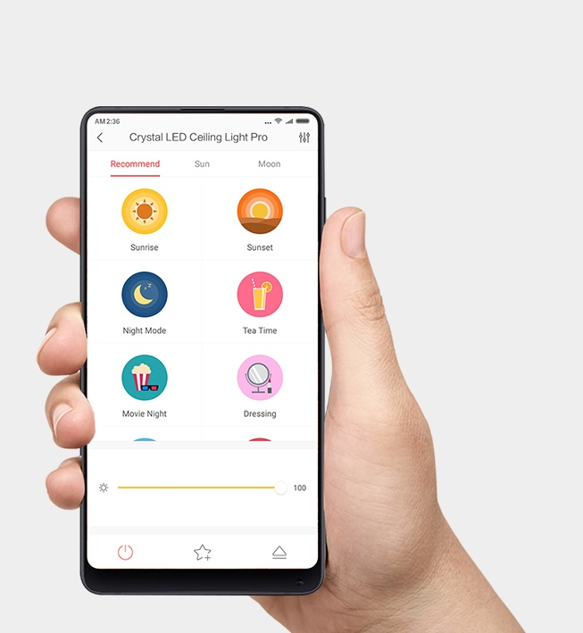

<div class="row yilai-snow">
    <div class="col-xs-12 col-sm-12 col-md-10 col-md-offset-1 col-lg-8 col-lg-offset-2 content">
        <section class="row yilai-snow_content_1">
            <div class="col-xs-12 col-sm-6 col-md-6 col-lg-6">
                <div class="text">
                    <h1>Yeelight Yilai Snow Ceiling Light</h1>
                    <h2>Интелектуальное освещение с&nbsp;натуральным светом</h2>
                    <p>Регулируемая яркость и&nbsp;цветовая температура | Для помещений до&nbsp;20&nbsp;м² | Умное
                        управление смартфоном</p>
                </div>
            </div>
            <div class="col-xs-12 col-sm-6 col-md-6 col-lg-6">
                
            </div>
        </section>

        <section class="row yilai-snow_content_2">
            <div class="col-xs-12 col-sm-12 col-md-6 col-md-push-6 col-lg-6 col-lg-push-6" style="padding: 0">
                <div class="text">
                    <h2>Лампа для&nbsp;любой комнаты</h2>
                    <p>Yilai Snow Ceiling Lamp 480 станет скромным, но ярким украшением любой комнаты площадью до 20 м², будь то гостиная или спальня — светильник прекрасно впишется в любую обстановку и озарит комнату ярким светом.</p>
                    <p>Мягкая круглая форма напоминает о полной луне и помогает настроиться на спокойный лад перед сном. Светодиоды самого высокого качества обеспечивают яркий и равномерный свет, а большой рассеиватель смягчает и делает его комфортным для глаз.</p>
                </div>
            </div>
            <div class="col-xs-12 col-sm-12 col-md-6 col-md-pull-6 col-lg-6 col-lg-pull-6" style="padding: 0; font-size: 0;">
                </div>
        </section>

        <section class="row yilai-snow_content_3">
            <div class="col-xs-12 col-sm-12 col-md-6 col-lg-6">
                <div class="text">
                    <h2>Прочный рассеиватель</h2>
                    <p>Рассеиватель светильника выполнен из молочно-белого акрила в простой незамысловатой форме. Благодаря высокой светопроницаемости и уникальным свойствам он пропускает только мягкий и равномерный свет.</p>
                </div>
            </div>
            <div class="col-xs-12 col-sm-12 col-md-6 col-lg-6" style="font-size: 0; padding: 0;"></div>
        </section>

        <section class="row yilai-snow_content_9">
            <div class="col-xs-12 col-sm-12 col-md-12 col-md-offset-1 col-lg-10 col-lg-offset-1 align-center">
                <div class="text">
                    <h2>Широкий диапазон настройки яркости и&nbsp;температуры</h2>
                    <p>Чтобы подобрать оптимальное освещение для работы или отдыха, температуру света потолочного светильника Yeelight Snow можно настраивать по своему желанию. Так же просто можно настроить и яркость до комфортного уровня.</p>
                </div>
            </div>
        </section>

        <section class="row yilai-lotus_content_8">
            <div class="col-xs-12 col-sm-6 col-md-6 col-lg-6" style="padding: 0">
                <div class="text">
                    <h2>Несколько элементов управления</h2>
                    <p>Yeelight Yilai Snow Ceiling Light поддерживает несколько вариантов управления. Помимо традиционного
                        настенного переключателя, в вашем распоряжении пульт Bluetooth и мобильное приложени Yeelight
                        или Mi Home. Управлять светом стало легко. Синхронизируя ваш свет с помощью Google Assistant или
                        Amazon Alexa, вы можете реализовать голосовое управление яркостью и цветовой температурой.</p>
                    <ul class="function">
                        <li>
                            <span class="icon appcontrol"></span>
                            <p>Приложение</p>
                        </li>
                        <li>
                            <span class="icon swichcontrol"></span>
                            <p>Выключатель</p>
                        </li>
                        <li>
                            <span class="icon remotecontrol"></span>
                            <p>Пульт</p>
                        </li>
                    </ul>
                </div>
            </div>
            <div class="col-xs-12 col-sm-6 col-md-6 col-lg-6" style="padding: 0; font-size: 0;"></div>
        </section>

        <section class="row nox-round_content_11">
            <div class="col-xs-12 col-sm-12 col-md-12 col-lg-12">
                
                <table class="table">
                    <thead>
                        <tr>
                            <th colspan="2">Характеристики</th>
                        </tr>
                    </thead>
                    <tbody>
                        <tr>
                            <td>Модель</td>
                            <td>YIXD05YI</td>
                        </tr>
                        <tr>
                            <td>Цвет</td>
                            <td>белый</td>
                        </tr>
                        <tr>
                            <td>Размеры</td>
                            <td>480×480×70 мм</td>
                        </tr>
                        <tr>
                            <td>Вес</td>
                            <td>1.8 кг</td>
                        </tr>
                        <tr>
                            <td>Световой поток</td>
                            <td>Регулируемый: 125-2100 lm</td>
                        </tr>
                        <tr>
                            <td>Цветовая температура</td>
                            <td>Регулируемая: 2700K-6500K</td>
                        </tr>
                        <tr>
                            <td>CRI</td>
                            <td>>95 Ra</td>
                        </tr>
                        <tr>
                            <td>Мощность</td>
                            <td>32W</td>
                        </tr>
                        <tr>
                            <td>Сеть</td>
                            <td>Wi-Fi IEEE 802.11 b/g/n 2.4GHz</td>
                        </tr>
                        <tr>
                            <td>Поддерживаемые платформы</td>
                            <td>Android 4.4 и выше / IOS 8.0 и выше</td>
                        </tr>
                        <tr>
                            <td>Управление</td>
                            <td>голосовое, пульт, приложение</td>
                        </tr>
                    </tbody>
                </table>
            </div>
        </section>
    </div>
</div>